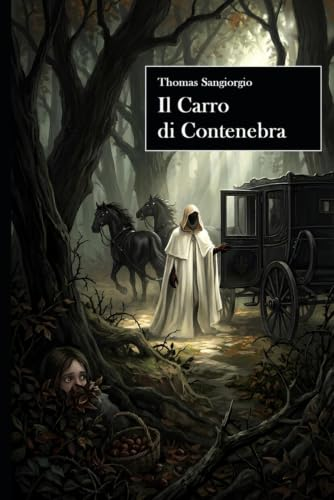

Il Carro
di Contenebra
Un romanzo breve che intreccia romanzo gotico e fiaba nera per raccontare una storia di caccia alle streghe, di colpa ereditaria e di amore capace di attraversare la morte senza negarla.

La storia
Un giorno d'autunno, nella foresta, la giovane Viviana vede un carro nero dirigersi fuori dalle terre abitate, dove si trova il maniero abbandonato degli estinti marchesi Miramonti. Dal carro scende una bianca figura dalle mani nere, che sembra quasi cercarla, ma che poi risale e riparte. Una volta a casa, la nonna le racconta la storia del Carro di Contenebra, una storia antica, che narra della tragica e misteriosa fine di una fanciulla di nome Morgana, la cui colpa fu di essere in qualche modo “diversa” dai suoi paesani.
Tornata nella foresta, avviene un'eclissi che risveglia strane presenze. Quando incontra il giovane Arrigo che, trovatala ferita, la carica proprio sul carro nero e la porta all'antico maniero dei marchesi Miramonti, Viviana non sa ancora che il racconto della nonna e la sua vita si sono appena intrecciate. Comincia così una segreta storia d'amore che dovrà districarsi fra la superstizione e la malizia dei paesani e il ricorso di un'antica maledizione.
L'edizione
- Pagine
- 108
- Lingua
- Italiano
- Pubblicazione
- 26 settembre 2026
- Formati
- Copertina flessibile · eBook
- ISBN
- 979-8177071251